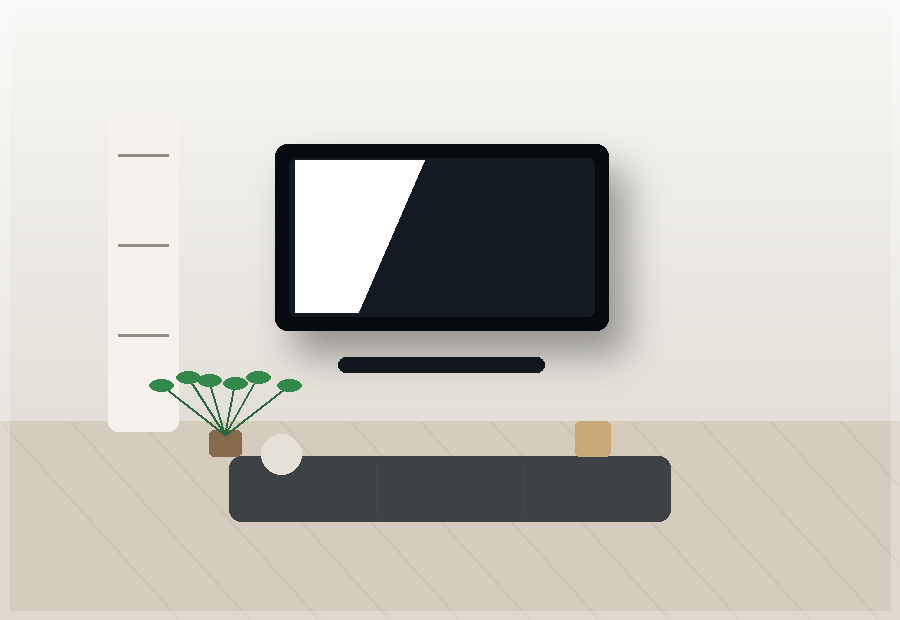
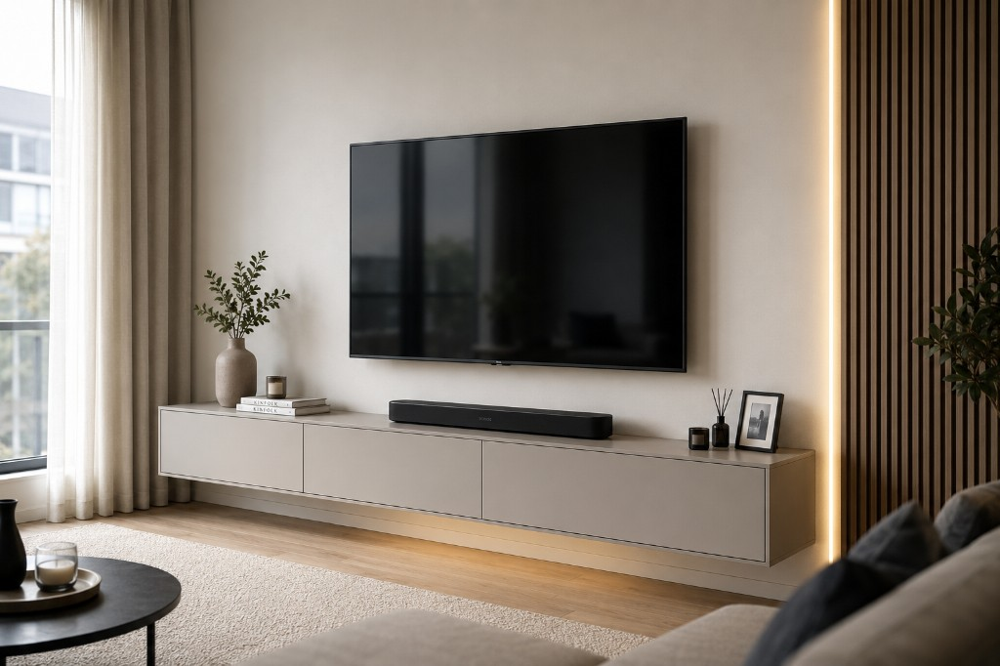
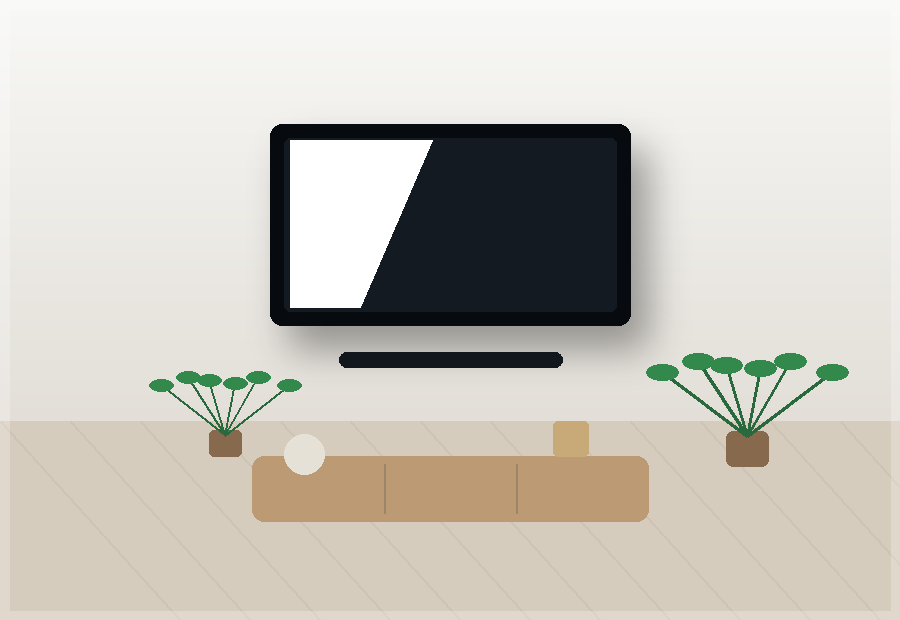
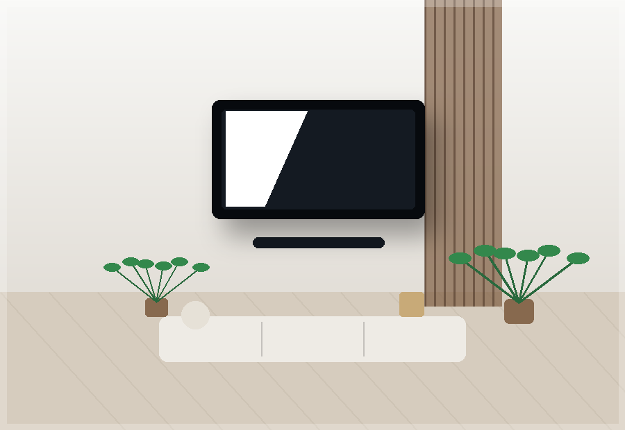
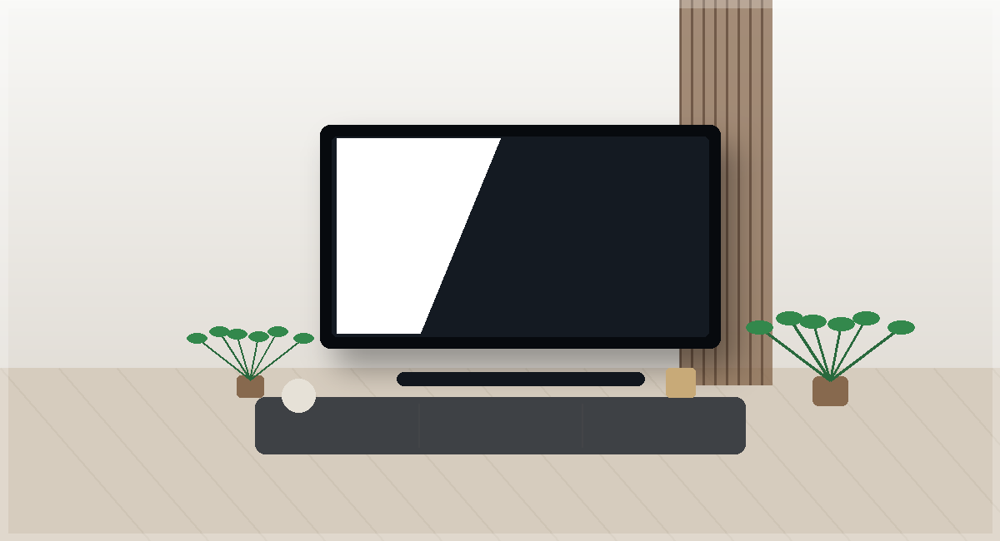
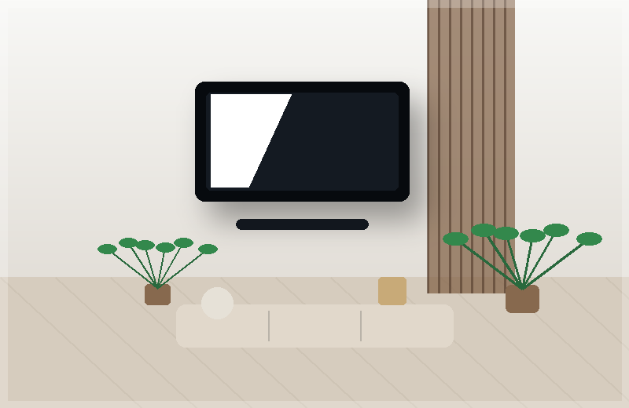
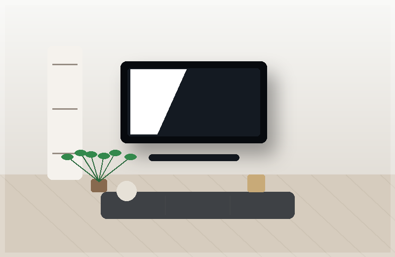
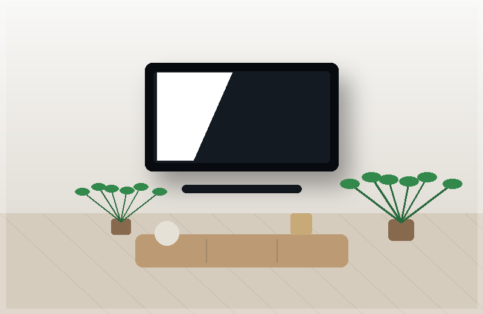
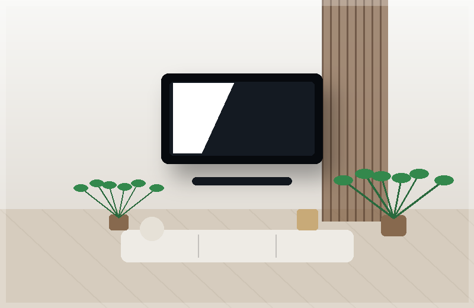
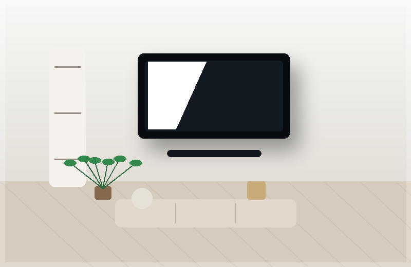

Montagem de TV
Instalação da sua TV na parede com alinhamento correto e fixação adequada.
WallFixTV.pt
Instalação profissional, segura e com acabamento limpo. Montamos a sua televisão com suporte fixo ou articulado e deixamos o espaço mais moderno.

Os nossos serviços

Instalação da sua TV na parede com alinhamento correto e fixação adequada.

Organização dos cabos para deixar o ambiente mais limpo e elegante.

Instalamos suportes fixos, inclináveis e articulados, conforme a necessidade.
Salas, quartos, cozinhas, escritórios, lojas e alojamentos locais.
Como funciona
Envie mensagem pelo WhatsApp com fotos da parede e tamanho da TV.
Marcamos o melhor dia e horário para si.
Fazemos a montagem com segurança, nível e cuidado.
Deixamos a TV montada e o espaço limpo.
Porque escolher a WallFixTV?

Trabalhos recentes





Fale connosco agora mesmo pelo WhatsApp.